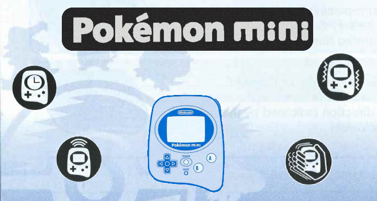
MIA
It's been quite a while since I've done one of these articles. After mid-September of last year, it may seem to some as if I'd just up and vanished. 2020 was a very difficult and tumultuous year, so I decided against pushing myself too hard to acquire and study new peripherals. It's nice to take a break and actually play games through emulators. One of the traps emudevs tend to fall into is hyper-focusing on programming and research, all the while forgetting what made them pursue this path in the first place: the games. So for the past few months, I've really been enjoying PCSX2's latest 64-bit support in Linux, and I finally took a serious interest in RPCS3. Both experiences so far have been marvelous and flawless for the games I wanted to play. But I digress, it's time to get back to business. Vacation's over, and as always there's a piece of video game history that needs to be reclaimed.
This Edge of Emulation article is going to be a bit different from the rest. Rather than just write about a single accessory, I'm diving into an entire handheld console. In late 2001, Nintendo released a small device called the Pokemon Mini. Though the system was rather tiny, it sported a 96x64 monochrome LCD, a D-pad, a few face buttons, force-feedback, a shock detector, an RTC, and an infrared port. It was quite unlike other products of similar size, such as Tamagotchis or Nintendo's own Pokemon Pikachu because it accepted cartridges to load new games. As its name suggests, the Pokemon Mini was dedicated to playing miniature Pokemon games. All of the official software was published by Nintendo, and every title revolved around the Pocket Monster franchise. Although the games themselves were usually simple in concept, they often packed a lot of replay value.
Unfortunately, during its retail availibilty, the Pokemon Mini never became as well-known as the Game Boy Advance, or the older Game Boy Color. A grand total of 10 games were released altogether for the system, most of which were Japanese exclusives. Exactly 1 year after it launched in Japan, the last game for the console was sold. While many may be quick to dismiss the Pokemon Mini as a "failure" due to its limited impact and short lifespan, Nintendo might have decided from the start they wanted something that was only briefly relevant on the market. It would make sense to downplay the Pokemon Mini so as not to cannablize any GBA sales, which were quite important for the company during the 6th Generation. For example, to isolate it from the GBA, the system exclusively featured Pokemon-based content and allowed no 3rd party developers.
The Pokemon Mini has since virtually disappeared from most people's minds. Out of curiosity one day back in early 2019, I decided to examine the state of its emulation. Given how obscure handheld was, I couldn't help but ask if anybody had successfully preserved it. Much to my surprise, a handful of emulators did exist and were capable of playing the games. Although none had seen any active development in years, they'd reached a near perfect state for commercial and homebrew software. One detail, however, was not emulated at all. Not even Nintendo's own emulator on the Gamecube (found inside Pokemon Channel) handled this one aspect of the original hardware. That bugged me, a lot actually, more than I cared to admit at that point. For a while I had this crazy idea that maybe I should try to emulate it. It kept nagging at me until eventually I gave in. As bizarre as it sounds, I decided to add yet another core to GBE+, just to emulate a console whose games you can count with two hands, just to emulate a feature that was only used in half of them.
Step 1: Memory
So, how does one build an emulator for the Pokemon Mini? Thankfully, I didn't have to start from scratch. A long time ago, when I was originally designing GBE+, I made a process that separated the DMG/GBC emulation from the GBA emulation. I managed to make them distinct "cores". Depending on the game, the DMG/GBC core would launch, or the GBA core would launch. This helped significantly when merging high-level SGB support and NDS support into my emulator too. Internally, GBE+ has the ability to expand the number of systems it can emulate. It technically has the potential to become a vast, multi-system emulator like Mednafen. Although I'm hesitant to take it that far, I thought a Pokemon Mini core was a good addition since it is a Nintendo handheld, even if it has no direct lineage to the Game Boy. Thanks to GBE+'s structure, a lot of the basics were already covered.
To begin emulating a new console, I always start with memory management. This means simply reading files such as the BIOS and the game ROM, as well as programming functions that can read and write bytes to different memory locations. I consider this a priority above the CPU, simply because for the CPU to work at all, it needs to access bytes in memory. In essence, dealing with memory is the first practical step when starting a new core, at least for me. Before coding anything related to the memory, however, it's important to understand the memory map of the target system. This is the layout of different areas of memory according to their purpose and their relevant address ranges. For example, the BIOS gets its own section, RAM gets another, and Cartridge ROM occupies a separate space. The memory map for the Pokemon Mini looks like this:
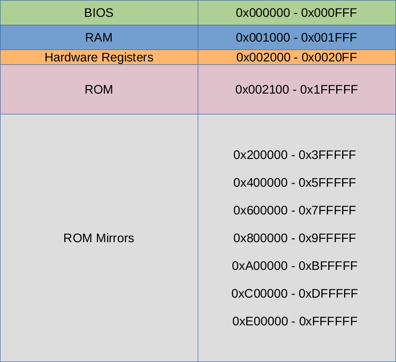
With this information, GBE+ can read the user-specified BIOS and ROM files and copy them into an emulated version of the memory map at the appropiate locations. Whenever a CPU instruction needs to read BIOS or ROM data, GBE+ pulls up the bytes at the exact address needed. GBE+ emulates the Pokemon Mini's memory by creating a large array, or a large container of sequential bytes. Bytes 0, 1, and 2 of the array corresponds to Bytes 0, 1, 2 of the Pokemon Mini memory map, and so on and so forth. Whenever the emulated system reads from or writes to the Pokemon Mini memory, this array is accessed instead. The Pokemon Mini has a fairly small memory map, reaching a size slightly less than 2MB, so GBE+ doesn't have to worry about using a bunch of the host PC's RAM for the array.
One thing to note about ROM data on the Pokemon Mini is that it is "mirrored" when trying to access any bytes beyond the 2MB limit. Mirrors in computer memory are areas that hold identical data to another even though their addresses differ. Often times, the data isn't actually being copy+pasted to multiple addresses, but rather certain bits of an address are explicitly ignored, so the real address being read from or written to wraps around to something else. In the case of the Pokemon Mini, only the first 21-bits of a 24-bit address are used. Anything higher than 0x1FFFFF ignores the extra bits. Trying to read the address at 0x200000 will in fact point back to 0x000000 of the ROM. Emulating the mirrors isn't necessary to get homebrew or commercial games running, but it is a neat feature to complete for the sake of accuracy.
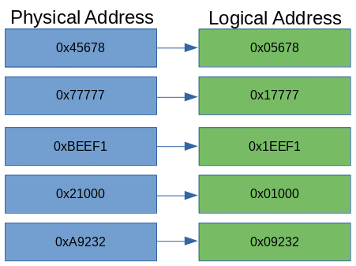
An illustration of memory mirrors in the Pokemon Mini. Note that the mirrors will point to ROM only, not BIOS or RAM.
With BIOS and ROM data inserted into the emulated memory map, specific read and write functions need to be programmed to store or retrieve bytes. The Pokemon Mini CPU (described in the next section) expects to access data in several ways. For reading it needs signed and unsigned 8-bit and 16-bit values, and for writing it only uses unsigned 8-bit and 16-bit values. Unsigned numbers are always positive, while signed numbers can be positive or negative. Thanks to the way binary math works, negative signed numbers have to be encoded a certain way, and the Pokemon Mini uses Two's Complement. When reading a signed 8-bit or 16-bit number, GBE+ has to convert this accordingly to get the correct value.
The next job of GBE+'s memory manager for the Pokemon Mini core is to handle Memory Mapped Input/Output or MMIO. A lot of the Pokemon Mini's hardware is controlled by writing specific bytes in memory to configure the handheld's behavior. For example, to enable sprites on the LCD, or to set the audio volume, the software writes to a dedicated hardware register. These registers may look like simple bytes in RAM, but they're directly tied to the inner workings of the system. In other words, many of the key mechanisms inside the Pokemon Mini are exposed as bytes in memory, hence the "memory mapped" part. Changing their values changes how the hardware operates.
Here, GBE+ needs to monitor specific addresses when writing to them and take proper action, such as enabling or disabling a timer when the CPU writes to its control byte. On the other side of things, GBE+ needs to return special values in some cases when reading a hardware register. For instance, the current value of the timer's counter may constantly update itself as the software runs, so GBE+ needs to fetch the most recent data when the CPU requests it. There wasn't much to do in terms of MMIO when the Pokemon Mini core began in GBE+. Given the way I develop emulators, I don't find it optimal to start reading and writing hardware registers until the core starts emulating the actual hardware associated with them. As I added new parts to the core such as LCD rendering, input, and interrupts, additional pieces of MMIO handling was also added.
The final piece of the Pokemon Mini's memory isn't exactly touched by the memory manager in GBE+, but it's an important concept to understand when dealing with the CPU. The Pokemon Mini operates in what's known as Model 2/3 Maximum Mode. This rather cryptic naming convention simply means that data can be accessed through different banks or blocks. The CPU can only work with 16-bit values at most, so theoretically it has access to a mere 64KB of the total memory map. In order to access the rest of the data in memory, it has to access a new bank. Code (instructions to be executed by the CPU) and data (any other bytes needed by the CPU) work based on 32KB and 64KB banks respectively.
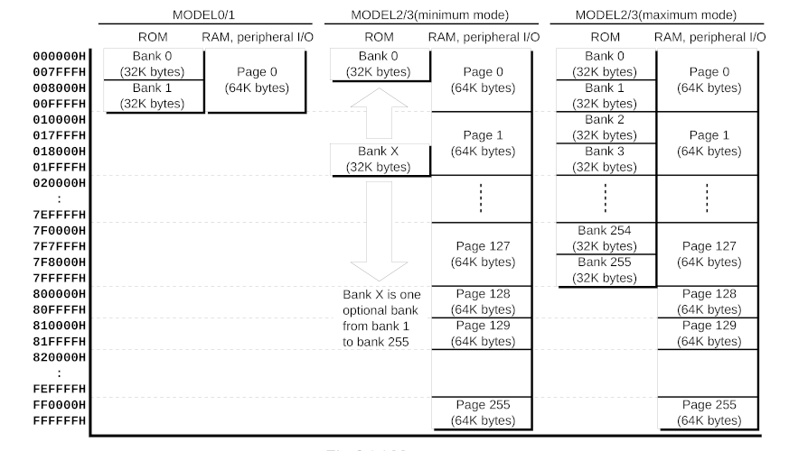
Different versions of the CPU used in the Pokemon Mini offer alternative models and banking schemes.
As a demonstration, to start running instructions at memory location 0x10000, Code Bank 2 is used. To start reading ROM data at 0x30000, Data Bank 3 is used. Code and Data bank calculation falls upon the emulated CPU, so the memory manager just needs to know what the final address looks like. This memory model, however, is crucial for running all commercial games and a number of homebrew titles. Every commercial game exceeds 64KB, therefore it becomes impossible to correctly emulate them without implementing the memory model. Model 2/3 Maximum Mode also determines how some CPU instructions behave, as the banking information is required when making certain kinds of branches.
Step 2: The CPU
Now for the brains of the emulator, the CPU. It's the engine that drives the rest of the system. The Pokemon Mini uses an Epson S1C88 clocked at 4MHz. Although this is an 8-bit microcontroller, it is surprisingly complex in a handful of regards. The S1C88 can perform some 16-bit operations, handles up to 32 hardware interrupts of varying priority, allows for software interrupts, has built-in support for binary-coded decimals for many instructions, and supports hardware multiplication and division. Even though the Pokemon Mini may appear to be far simpler than the original Game Boy, CPU-wise it's quite leap away from the Game Boy's SM83 (aka GBZ80).
The first part of the S1C88 GBE+ needs to emulate isn't the instructions, but something more fundamental: CPU registers. These are a collection a 8-bit and 16-bit values within the CPU, used primarily while executing instructions. They're essentially local variables that the CPU has incredibly fast access to at any given moment, far quicker than grabbing data from RAM or ROM. The downside is that CPU registers are often limited in number, and some are reserved for very narrow roles that cannot be altered. At any rate, nearly every CPU instruction interacts with these registers.
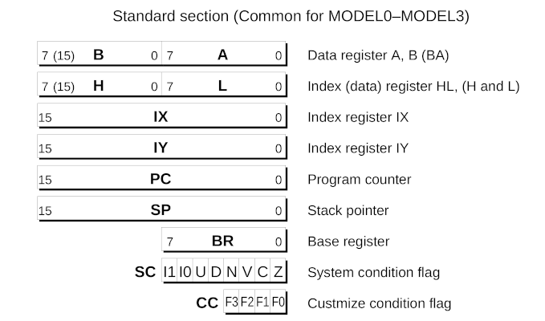
These are the official names of the CPU registers as told by Epson.
The four 8-bit registers A B H L are often used for data, either storing the results of other operations or acting as a temporary value when transferring memory around. In particular, the A register is known as an accumulator, which is just a fancy word meaning it often stores the immediate results of many math-based instructions like addition or subtraction. These 8-bit registers can double-up and form 16-bit registers depending on the instruction, in which case the S1C88 sees them as BA HL. In their 16-bit forms, they can be used as index registers which is just a fancy way of saying they hold 16-bit addresses. They point to the location of memory that will be read or written. Nothing prevents them from just being used as regular 16-bit data, however.
Two explicit index registers exist in IX IY. Unlike the above, these 16-bit registers don't break down into individual 8-bit ones. Their function is as previously described: to point to and access memory, or to simply store and manipulate an arbitrary 16-bit value. The remaining 16-bit registers are PC SP, better known as the Program Counter and the Stack Pointer. The Program Counter is the current address where the CPU will fetch instructions. As an instruction is processed, the Program Counter is automatically updated to move onto the next one. The Stack Pointer is the current address of the call stack. This stack is used to temporarily hold data when calling other portions of code. Data is pushed here when the calling code begins and retrieved later after the code ends. Importantly, the stack can preserve data such as the CPU registers and restore them when needed. This is useful as the software can happily overwrite the CPU register values knowing it can return them to an earlier state.
A few odd 8-bit registers are quite specialized in the S1C88. BR acts as a base register for a 16-bit address. To illustrate this, setting it to a value of 0x20 would cause it to point to the memory address 0x2000. The System Condition Flag SC stores information about the CPU's internal state, such as the results of the last math operation (zero, non-zero, negative, etc) as well enabling or disabling certain interrupts, binary-coded decimal mode, and packed/unpacked operations (8-bit vs. 4-bit). Lastly, there's the so-called "Custmize Condition Flag" CC (note, the typo is theirs, not mine), which keeps track of when certain exceptions are raised by the CPU. The only one known to exist on the Pokemon Mini is a Division by Zero exception.
Finally there are five 8-bit expansion registers NB CB EP XP YP. These act as the bank numbers used in the S1C88's Model 2/3 Maximum Mode. NB CB are the New Code Bank and current Code Bank. The CPU must change the New Code Bank prior to making any jumps or calls; after the instruction branches, the current Code Bank is updated with the value from the New Code Bank, and all subsequent instructions will be fetched from this bank. EP XP YP are the banks used by the index registers HL IX IY. Unlike code banks, data banks are changed instantly.
Emulating the registers themselves is quite easy, as GBE+ just uses ordinary 8-bit or 16-bit variables. Even though a lot can be written about the CPU registers and how they work, they're relatively simple to program. All one has to do is use the correct ones when emulating the instruction set. Regarding the actual instructions, the S1C88 is a fairly straightforward bit of hardware. There are loads, stores, addition and subtraction operations, bit shifting and testing, bitwise operations, stack handling, byte rotations, multiplication, and division. All of these are pretty standard in most any CPU. Emulating these amounts to reading the S1C88 manual and following its descriptions. When it says something like LD HL, SP "Loads the content of the stack pointer (SP) into the register HL", I use C++ to copy the value of GBE+'s SP variable into its HL variable. It's a very formulaic and dry 2-step process: read technical explanation, recreate said behavior in C++. Rinse and repeat for some 600+ instructions.
Once the functionality of every CPU instruction is implemented, technically the emulator can now "run" games. It can load the ROM and start executing code, in theory. In practice, there is one more aspect of the CPU to emulate. Interrupts are a way of abruptly stopping the software due to some event. For hardware-based interrupts, these are actions like a timer reaching a certain value, or the LCD finishing a frame, or one of the D-pad directions being pressed. In those cases, an interrupt can take the software away from one task to temporarily deal with another. For input interrupts, it may be necessary for the software to handle button presses right away as opposed to waiting. Interrupts thus allow the software to jump to code that deals with the event that generated it. Of course, once the interrupt has been dealt with, the program returns to where it originally came from so the overall flow of the software is not disturbed.
When the Pokemon Mini first boots up, it triggers the System Reset interrupt. This launches the CPU into the BIOS, where parts of the hardware are initialized. In order to even start executing the correct instructions, GBE+ has to then emulate the interrupt system. At the start of this project, with no other hardware emulated besides memory and CPU, only one interrupt is needed, the System Reset one. Like MMIO in the memory, additional interrupts were added as GBE+ supported more pieces of the Pokemon Mini. Interrupts on the Pokemon Mini are highly configurable. Individual interrupts can be enabled or disabled through hardware registers, but each interrupt can also be assigned a priority level. In case two or more interrupts are pending at the same time, one can have a higher level than the other, thus the CPU will service it first. Furthermore, the SC register dictates which priority levels are permitted. The only interrupts that cannot be blocked are Non-Maskable Interrupts or NMIs, of which the System Reset interrupt is the only one.
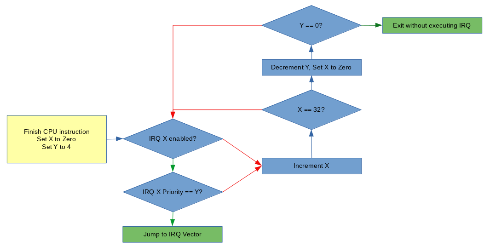
This flowchart shows the logic applied when the emulated CPU decides if an interrupt should be serviced.
If all the conditions are right, the CPU services the interrupt. This means it jumps to an interrupt vector, which is just a special address where code designed to handle the interrupt resides. The Pokemon Mini reads a 256 byte table situated at the very start of the memory map. Each 16-bit entry in the table is an address the CPU will jump to when a given interrupt is serviced. For System Reset, it is IRQ 0, so the CPU reads the first 16-bit entry and jumps to that address. For the A Key, it is IRQ 28, so the CPU reads the 28th entry and jumps to that address.
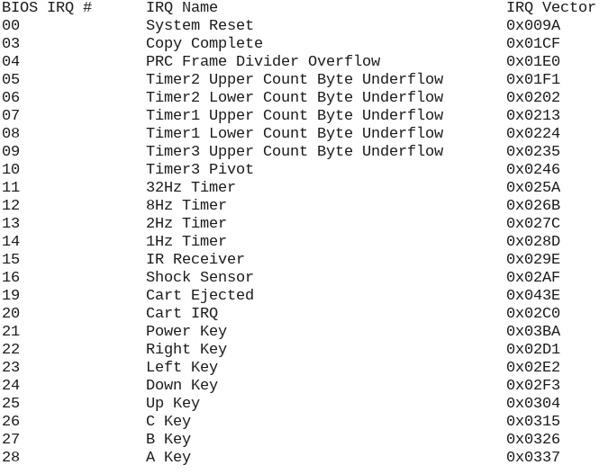
A list of all the valid interrupts on the Pokemon Mini and their vectors.
Once the CPU's registers, instructions, and interrupt handling are all emulated, now the core can begin running software. Of course, while the software will run, the core doesn't yet have the ability to display any sort of graphics, which leads into the next section...
Step 3: The LCD
The screen on the Pokemon Mini may be small, but it manages to pack a decent amount of features. Measuring at 96x64 pixels, the monochrome LCD is a rather strange beast. It sports a Program Rendering Chip (PRC) that uses a tiling system not unlike many other 2D systems such as the Game Boy or NES. Using the PRC, the handheld can draw maps of 8x8 tiles and separately draw 16x16 sprites. The PRC, however, essentially handles the task of plotting pixels to a framebuffer automatically. To game software, the PRC provides an easily accessible abstraction for putting things on the screen. The Pokemon Mini's LCD controller, a SED1565, can also be used draw individual pixels at arbitrary positions in the framebuffer by issuing specific commands. And if quicker raw access is needed, games can write to the framebuffer directly at the memory locations 0x1000 - 0x12FF, also known as GDDRAM. While many games just use the PRC and treat graphics like traditional 2D tile-based consoles, the Pokemon Mini is at its heart framebuffer-based. It's a somewhat odd mix to see, especially in a handheld of this era.
The PRC generates graphics in the following 3 stages: Map rendering, sprite rendering, and frame copying. For the first stage, the map is a background composed of 8x8 tiles. The size of the map can vary, with configurations of 12x16 tiles, 16x12 tiles, 24x8 tiles, and 24x16 tiles. As data, the map is nothing more than a large table filled with numbers that serve as Tile IDs. These IDs point to a specific tile that the PRC will then look up for drawing. If the first entry in the table is 0x0A, for example, the PRC will look for the graphical data belonging to the 11th tile. If the second entry in the table is 0x2F, the PRC will look for the graphical data belonging to the 46th tile. The process repeats until the PRC iterates over the entire table.
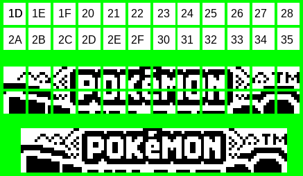
A visual illustration of the PRC turning Tile IDs into actual graphics. Note that the Tile IDs do NOT have to be arranged on the map in any specific order. See how Tile ID 0x29 is absent from this section of the map altogether.
A special hardware register called PRC_MAP contains a 21-bit address where the graphical data for the tiles starts. The Pokemon Mini is fairly unique in comparison to the Game Boy, GBA, or even NDS in that the software can simply point to an ordinary area of ROM or RAM and have it automatically transformed into graphical output. On other Nintendo handhelds, data must first be transferred into very specific parts of VRAM. Of course, while it's possible to use Direct Memory Access or DMAs to copy data into VRAM as needed on the more powerful consoles, the Pokemon Mini's PRC makes it far easier to display something than any of them in my experience.
The format of the tile data is very simple. Each 8x8 tile consists of 8 bytes. Each byte represents a vertical strip or a 1x8 sliver. The top pixel of the sliver is represented by the least significant bit, Bit 0. The bottom pixel of the sliver is represented by the most significant bit, Bit 7. If a bit is set to "0", the pixel is OFF. If a bit is set to "1", the pixel is ON. The PRC can invert black and white colors, however, switching ON pixels into OFF pixels and vice-versa.
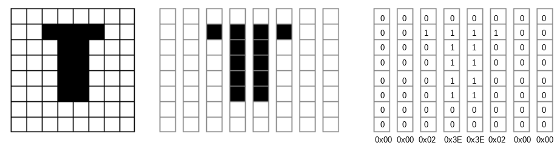
Two other hardware registers called PRC_SCROLL_X and PRC_SCROLL_Y scroll the map horizontally and vertically, respectively. The map can scroll in either of these directions for 127 pixels, at least until it hits the size limits of the map. If the scroll values extend past the map, the PRC clamps the position at the edge. As a result, there is no wraparound whatsoever. If the map rendering stage is enabled, a 96x64 segment is copied into the framebuffer, accounting for any scrolling. The framebuffer data has the exact same format as the map's tiles.
The next stage is sprite rendering. Sprites, often called "objects" or OBJs among developers, are drawn over the map. Unlike other 2D rendering systems, the Pokemon Mini's PRC does not allow sprites to hide behind portions of the background. On the original Game Boy and Game Boy Color, sprites and background tiles could have different priority levels, thus one would draw on top of the other. No such functionality natively exists in the Pokemon Mini's PRC; sprites are always rendered above the map. However, cleverly editing the framebuffer directly could recreate the effect of hiding sprites, as could using other sprites to simulate a piece of the background.
A total of 24 16x16 sprites are available to the software. Each sprite is governed by a set of attributes, a series of bytes in RAM called Sprite Attribute Blocks. These properties define where the sprite will be positioned, the Tile ID used for the sprite, horizontal and vertical flipping, color inversion, and whether or not the sprite is enabled. Sprite Attribute Blocks are all 4 bytes in length, and 24 of these entries occupy the memory region 0x1300 - 0x135F. Once these attributes are processed, the PRC knows exactly how to start rendering sprites.
Sprites are drawn in reverse-order, starting at OBJ 23 and ending with OBJ 0. Sprites can overlap one another, and in that case, the lower-numbered ones are drawn over higher-numbered ones. Their format is somewhat similar to the map tiles, but the Pokemon Mini uses a mask for each of the sprites 4 8x8 segments. The mask ultimately determines which parts of the sprite are opaque or transparent. Essentially, this decides whether a sprite's pixel, black or white, is drawn at all. Because sprites can represent non-rectangular graphics, some parts have to be transparent so that the background draws correctly behind it. When reading individual bits from the mask, the PRC uses a "0" to represent opaque pixels and a "1" to represent transparent ones.
Each sprite uses 64 bytes of data for graphics: 32 for the masks, and 32 for the pixels themselves. The data itself follows particular order for mask bytes and data bytes. The sprite is divided into two 16x8 halves, top and bottom. First comes the top half's 16 mask bytes, then top half's 16 data bytes. After that come the 16 bytes for the lower half's mask and 16 bytes for the lower half's data. Like the map tiles, both the sprite's mask and data bytes are 1x8 slivers, with the least significant bit being the top-most pixel, and the most significant bit being the bottom-most pixel. Taken together they form a 16x16 sprite composed of black and white pixels, along with transparent parts that aren't shown. Like maps, the PRC uses a special 21-bit address to locate the start of sprite data, the hardware register PRC_SPR.
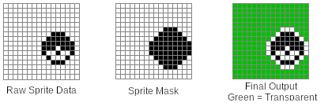
This data is ultimately put into the framebuffer in GDDRAM. If parts of a sprite are offscreen, either through negative coordinates or coordinates that extend beyond the 96x64 frame (note: sprite X/Y positions range from -16 to 112), they are not drawn, and there is no wraparound. Once the map and sprites stages complete, the final phase, called frame copy, can now begin. Here, all the data in GDDRAM is translated into pixels, then pushed to the screen. It's important to note that while the Pokemon Mini's PRC technically operates at ~72Hz, the frame copy stage doesn't occur every time. Instead, the PRC can be configured to skip a certain amount of frames. When skipping 1 frame, the effective frame rate drops to ~36FPS. When skipping 2 frames, the effective frame rate drops to 24FPS. The PRC can even go as low as 6FPS by skipping a whopping 11 frames. There is currently no known way of forcing the PRC to draw at the full ~72Hz.
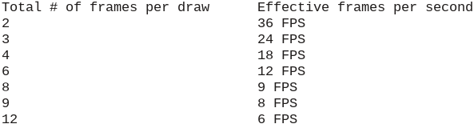
A list of all the available refresh rates for the PRC
There is a reason why the Pokemon Mini skips frames like this. Updating the screen with the framebuffer essentially halts the CPU. I'm not 100% certain what's going on inside the console, but if I had to guess, I'd say the PRC probably triggers the bus authority release status. Judging from the S1C88 Core CPU Manual, it seems like a peripheral circuit (such as the PRC???) can access memory directly by requesting temporary control of a bus. Once the CPU cedes authority of the bus to the peripheral circuit, it also suspends its normal operations. When the peripheral circuit is done, the CPU regains control of the bus and resumes processing. This is speculation, but I can easily see the PRC taking advantage of this aspect of the S1C88. Regardless of what the silicon is doing, drawing to the screen means some CPU cycles are unavailable for the software to use. When the draw rate is reduced, games have more time to execute code and hit their target framerates.
The PRC is the most common method of drawing graphics to the screen, however, two other methods can be used. The SED1565 LCD controller accepts commands that can control how individual pixels are plotted. No official software is known to send these commands, but several homebrew games use it. Additionally, GDDRAM can be written to directly by the game software. Pokemon Shock Tetris (aka just Pokemon Tetris in Europe) uses this to create the scrolling text effect when selecting different play modes. It quickly draws several sprites at once for the text on one frame, then on subsequent frames it manually copies bytes in GDDRAM to shift them leftward. Every few frames, new text is drawn on the right side. I must mention that using the PRC and using these more direct pixel drawing methods are not mutually exclusive, and as Shock Tetris demonstrates they can easily be applied together.
Despite spending a significant segment of the article describing LCD operations, getting GBE+ to show things correctly wasn't the most challenging obstacle I faced. In terms of difficulty, the Pokemon Mini's graphics have been the easiest yet. Out of all the systems I've emulated, it has the most straightforward rendering process. It doesn't render pixels per-scanline as far as I know, doesn't have any super sensitive timing issues, and doesn't have a huge amount of edge-cases and quirks. Draw the background, draw the sprites, copy and paste it to the screen.
The only tricky thing I had to consider was putting data into GDDRAM during the map and sprite rendering stages. At first, during each stage, I skipped updating GDDRAM and instead drew the map and sprites directly into a 96x64 buffer. This is enough for the vast majority games, commercial or homebrew. However, as soon as they start using the data in GDDRAM to draw the framebuffer, trouble starts. Shock Tetris had heavy graphical glitches until I rewrote my LCD code. Now instead of putting pixels into an output buffer immediately, the map and sprite stages each change GDDRAM as needed. During the frame copy stage, the entirety of GDDRAM is parsed and then transformed into a buffer for final rendering by the emulator.
Step 4: Input
With memory, the CPU, and the LCD emulated, GBE+ was now booting and running Pokemon Mini homebrew software. The likes of the Pokesnake and Galactix were running and displaying graphics. Seeing correct output drawn on-screen was proof that the Pokemon Mini core I'd been working on was on the right track. However, even after making it that far, GBE+ still couldn't actually play these games. Gamepad and keyboard input had not been implemented in the core yet, and nothing about the Pokemon Mini's own input hardware was emulated at all.
A total of eight different buttons are recognized on the Pokemon Mini: Power, A, B, C (sometimes analogous to START on other consoles), and the D-pad's 4 directions. The 8-bit hardware register KEY_PAD contains the present status of each button, assigning one bit per button. A value of "0" means that input is being pressed. A value of "1" means that input is not pressed. This may seem unintuitive, as many tend to think of zero as signaling that something has not yet happened. It's easier to think of a bit's HIGH state as representing the default condition, and the bit's LOW state as representing some sort of disrupting event, such as a button pushing down. Other handhelds such as the GBA and NDS work in a similar way.
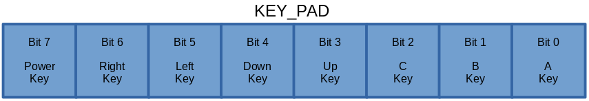
Each button press can generate its own interrupt. This allows the software to respond to user input almost instantly. Alternatively, the software can manually poll the KEY_PAD register at set intervals, such as once per frame. Some games even mix and match these two methods. Input that triggers interrupts usually gets processed first in order to respond to actions that need prompt handling. Other less time-sensitive input then gets processed later by reading KEY_PAD. To emulate the Pokemon Mini's input system, GBE+ waits for gamepad or keyboard activity. If that input matches certain values, GBE+ then flips the bits ON or OFF in KEY_PAD depending on the event that generated it. GBE+ also sets the corresponding interrupt. There's not much else to basic input beyond that; emulating this much allows the user to work the controls in almost any game.
Rather exotic for its time, however, the Pokemon Mini contains a shock sensor that detects movement or light impact. It's necessary for Pokemon Shock Tetris and has various other uses across the Pokemon Mini library. This isn't a physical button on real hardware, but it's impractical to start shaking a desktop PC or laptop to simulate this action (although mobile phone are perfect for this). Instead, it's possible to treat the shock sensor as if it were just another button as far as the user's keyboard or joystick is concerned. Just push down the configured input, and GBE+ registers the shock sensor as having activated. Games know when the shock sensor turns on when it receives an interrupt specifically for it. GBE+ simply sets that interrupt as needed.
Step 5: Timers
With memory, the CPU, the LCD, and input all emulated, GBE+ was now booting and actually playing Pokemon Mini homebrew software. Pokesnake and Galactix ran on GBE+ almost exactly like a real Pokemon Mini would. Although they were just a sample of what the Pokemon Mini could do, it showed that at least some games were now in fact fully playable in the emulator. Moving onto commercial games, however, would require GBE+ to implement more hardware components. Timers are a common feature across a wide variety of game consoles. The idea is to have a sort of clock running, based on CPU cycles. They're often highly configurable, letting the software divide the clock rate of the timer and setting custom countdown values that trigger interrupts when they're done.
Programs use timers to plan certain events at exact moments. Sound is one of the best examples. On some older game consoles, sound tended to be nothing more than beeps and boops of different lengths and frequencies played at specific intervals. The CPU had to manually tell the sound hardware when to make noise. Using timers and their interrupts, the CPU can jump to sound processing at the precise moment it needs to. Timers are also useful for, well, in-game timers! Racing games often use them to keep detailed track of how fast players finish a lap. They're quite critical for numerous other aspects of game software, and without them some games will not only behave oddly, they may refuse to boot at all.
For such a small system, the Pokemon Mini has a rather beastly set of timers. First up are the 3 General Purpose Timers plainly called Timers 1 - 3. Each timer can function as a single 16-bit timer or a pair of 8-bit timers. When configured correctly, it's technically possible to have 6 General Purpose Timers available. There are two components that drive these 3 timers: oscillators and prescalars. The oscillator is simply the clock source provided to the timer, and there are 2 to choose from. Oscillator 1 is based on the Pokemon Mini's 4MHz clock, and Oscillator 2 is based on a 32KHz clock. The difference between them is how fast each operates. Depending on the software's demands, one might be more appropiate than the other. Once an oscillator is chosen, a prescalar is applied. The prescalar decides how that clock will be further divided, providing finer granularity to the software on the timer's overall speed. Oscillator 1 runs from 2MHz to 976.5Hz, while Oscillator 2 runs from 32KHz to 256Hz
Whenever a timer finishes a single iteration, or a single hertz, it decrements an 8-bit or 16-bit counter. Once that counter reaches zero, it resets and fires an interrupt. Software can even further refine how fast the timer operates by changing the reload value aka the preset value. For an 8-bit counter running at 2MHz, if the preset value is changed from 0xFF to 0x7F, the timer will reach zero about twice as fast as before, in effect "halving" the timer's clock to 1MHz.
An illustration of the General Purpose Timers, Oscillators, and Prescalars (click to enlarge)
There is another timer called the 256Hz Timer. Unlike the General Purpose Timers, the 256Hz timer does not have many options or settings besides turning it on or off or reseting its counter. As its name implies, it operates at 256Hz. It can trigger interrupts at 1Hz, 2Hz, 8Hz, or 32Hz. Some games, such as the homebrew Pokesnake, use this timer as a seed for a random number generator. The counter will cycle through values 0 - 255 once per second. That value is captured when the player presses certain input, it can then appear "random" when the game uses it to plot the first position of the snake's food.
Since the timers all rely on CPU cycles, GBE+ must communicate this data to its emulated versions. In practice, this involves running a CPU instruction, tracking of how many cycles have passed, and counting out how many cycles should run before the timers start doing something. The Pokemon Mini is particularly challenging thanks to its 8-bit and 16-bit modes for the General Purpose Timers. When in 8-bit mode, one of these timers basically comes two separate ones, each with their own oscillator and prescalar. When in 16-bit mode, things are a bit easier to deal with. Additionally, the General Purpose Timers have interrupts for each 8-bit section when using 8-bit mode. It's quite a lot to keep track of on the CPU-side, not to mention a handful of hardware registers must be examined when writing to memory. GBE+ went through several revisions of its timers, and I'm still not satisfied it works 100% as it should. It's enough to get games running in a playable state, but eventually I want to write a specific test ROM to verify the code.
Step 6: EEPROM
With this much complete a lot of homebrew and commercial titles became compatible with GBE+'s fledgling Pokemon Mini core. A few loose ends remained before I considered it worthy of merging into the master branch. Pokemon Mini used EEPROM, a type of non-volatile memory, to record save game data. The EEPROM is not stored on the carts, in contrast with a number of GBA games for example, but instead sits inside the Pokemon Mini. Internally there are 8KB shared across all games. Given the small nature of the library, this isn't a big problem on real hardware, and with emulation players have virtually unlimited space anyway.
The Pokemon Mini sports a Microchip Technologies 24xx64 serial EEPROM, using an I2C interface to send commands that read from or write to specific memory addresses. In an earlier article, I handled a very similar EEPROM chip in the Soul Doll Adapter. The Pokemon Mini is not all that different. The I2C interface on the handheld involves writing to the EEPROM CLK and DATA pins in its IO_DATA hardware register. The general idea is to pull the CLK pin up and down constantly, like a pump, all the while pushing different values on the DATA pin as zeroes and ones. Certain combinations of the CLK and DATA pins signal the start of a command, at which point, bit by bit, the software is expected to send a read/write command and an address.
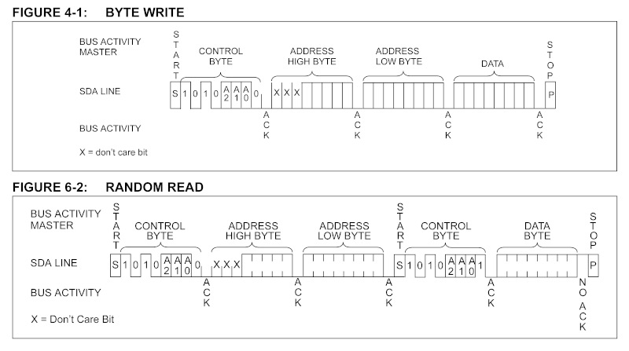
A visual demonstration of how to access EEPROM
EEPROM emulation is quite important. A lot of commercial games will not run at all without proper access to EEPROM. One of the earliest games GBE+ managed to boot, the Gamecube-exclusive Snorlax's Lunch Time, only ran after getting a very primative implementation into GBE+. The likes of Pokemon Race Mini required EEPROM saving, otherwise it would continually complain about being unable to save, thus preventing it from reaching the title screen. Although Pokemon Shock Tetris would boot and play, without EEPROM emulation, the game constantly displays a long list of errors every time it starts.
Step 7: Sound
One of the final steps in turning GBE+ into a half-decent Pokemon Mini emulator is enabling sound. Thankfully, sound on the Pokemon Mini is one of the easier features to get working. There's just a single sound channel on the Pokemon Mini, a simple piezoelectric speaker that blasts out square waves via pulse-width modulation or PWM. There are no fancy triangle waves, no sine waves, no volume envelopes, no frequency sweeping, no digital samples through PCM, no noise channels, no stereo. It's similar to a "buzzer" with an adjustable duty cycle and selectable frequencies. Despite how stripped down and barebones the audio is, Pokemon Mini games did manage to make actual music and catchy tunes. Considering that the software has to manage both background music and active sound effects on the same audio channel, it's very impressive what developers achieved given these limits.
Although Timer 3 is considered a General Purpose Timer, it can be used for the very specific purpose of generating audio. The frequency at which Timer 3's counter decrements is also the frequency of the Pokemon Mini's current sound. If this frequency is set just right, it can reproduce music notes at different octaves. The duty cycle determines what percentage of the square wave is high (at the maximum amplitude/volume) versus low (at the minimum amplitude/volume). Altering the duty cycle changes the texture of the note, making it into a sort of different "instrument" in some regards. The duty cycle is called the pivot on Pokemon Mini. This pivot is like a threshold within Timer 3. Once Timer 3's counter falls below the pivot value, the square wave switches from low to high. The duty cycle is then the ratio Timer 3's preset value and its pivot value. A preset value of 0x2200 and a pivot value of 0x1100 yields a duty cycle of 0.5, and the square wave is equal parts high and low.
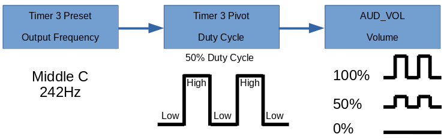
This shows how all the pieces work together for the Pokemon Mini to generate sound.
There are many approaches to emulating sound, and some are better fits than others depending on how accurate the output needs to be, the quality of said output, or how exactly the output needs to be synced with video. GBE+ already uses several techniques. For the DMG/GBC core, instead of generating sound sample-by-sample based on how many CPU cycles have passed, the emulator calculates the frequencies of the various audio channels and generates samples based on how much real time has passed via a callback function supplied to the SDL2 API. If SDL2 updates audio fast enough, it creates a very convincing rendition of Game Boy audio despite not exactly being accurate sample-wise with respect to the hardware. It was a design choice I made when I was very new to programming an emulator, but I liked its relative efficiency and ability to sync well with video output.
For the Pokemon Mini, I took a similar route, however, I made sure to buffer the audio frequently with samples before the callback function executes. A lot of sound effects and musical notes on the Pokemon Mini are short, at times updating in-between frames. Failing to quickly capture and changes might result in one note lasting longer than it should, or a note starting too late. Thankfully the callback to the SDL2 audio API was very rapid once a few settings were tweaked. As of this writing, GBE+ has servicable audio in the Pokemon Mini core, but it needs further work. In the future, a filter can be applied to give the samples a softer sound that better mimics how it plays on real hardware. With sound implemented, however, GBE+ had a fully functional Pokemon Mini core capable of running all of its commercial games.
Speed of light
So what exactly is this article even about, besides an in-depth tour of the Pokemon Mini hardware? Normally I write about emulating things that have either had poor or no support in the past. There are already several Pokemon Mini emulators available on all kinds of platforms, even on Android and the original Xbox. The ones on PC are stable and have matured quite nicely over the years. For anyone wanting to try out the Pokemon Mini, PokeMini and Minimon will satisfy their curiosity. As mentioned earlier, even Nintendo made an emulator, playable via Pokemon Channel on the Gamecube. There are plenty of options out there despite how obscure the handheld is. Even so, one feature is absent in each and every one of these emulators: infrared emulation.
The Pokemon Mini uses an IR transceiver at the top of the unit, beaming shorts bursts of light to another Pokemon Mini, or accepting signals from another source (such as TV remotes). Primarily, the IR port provides wireless multiplayer functions. Tasks range from simply exchanging ghost race data or comparing fastest lap times in Pokemon Race Mini to more complex activities like 5-player card games in Zany Cards, or real-time 2-player Tetris matches in Shock Tetris. Unfortunately, even after all these years, no one had added netplay to any Pokemon Mini emulators. For the longest time I toyed with the idea of taking up the challenge myself, and the longer I thought about it, the more it annoyed me this hadn't been preserved yet. I'm the kind of person who really loses sleep if my mind starts to think about all the odds and ends of gaming history that still need saving.
Emulating the Pokemon Mini's IR port, however, is a daunting challenge, especially considering I've never owned the handheld. I only have access to Pokemon Channel, which doesn't even touch anything IR related. Though fairly expensive, second-hand Pokemon Mini's are readily available online. However, the flashcarts necessary for running homebrew tests on hardware are rather hard to come by. Supply comes and goes, depending on when batches of the Ditto Mini are on sale. COVID-19 has severally restricted and delayed recent production. Additionally, to do any proper testing, I'd need two Pokemon Minis with 2 flashcarts. Not only is all of that a lot of money to spend, it's also impossible to obtain all of those pieces currently. At worst though, those are just minor details. It should have been possible to emulate IR communications if the software itself was understood well enough.
I started building GBE+'s Pokemon Mini core despite going in "blind" with no way of verifying or checking how the hardware worked. Once I got the first few commercial games to boot, I immediately began investigating how the handheld dealt with IR. The first game I looked was Zany Cards. Most of its games revolve around multiplayer, thus making it an attractive target. It has one screen for letting Players 2 through 5 receive data while Player 1 starts the transfer. Before trying to link two instances of GBE+ together, I logged the output of what the emulated Pokemon Mini was trying to send. IR communication is handled through the IO_DATA hardware register, with one pin each dedicated to Tx and Rx (sending a signal and receiving a signal, respectively). A third pin can toggle the entire IR port on or off.
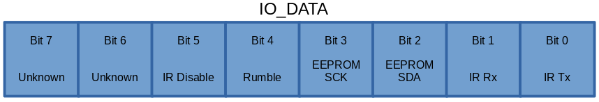
As I scanned through the various writes to IO_DATA, I initially had no clue how Tx and Rx were used by the game. That is to say, does a value of "0" represent OFF and a value of "1" represent ON, or the other way around? On a hunch, I fell back to my previous experiences with IR emulation on the GBC. On that handheld "1" is actually used for the OFF state, and "0" is used for the ON state. Once again, it may seem counterintuitive to have zero mean something is activated, but these values are arbitrary at any rate. I confirmed my suspicions by reading through the log. Player 1 continually sent IR pulses by setting Tx exclusively to "0", therefore zero logically must have been an ON state. It wouldn't be possible to have Player 1 communicate if it only ever turned its IR signal off.
The logs revealed another mystery, however. If Player 1 only sent ON signals, how did Player 2 receive new IR signals? Unlike the GBC, the Pokemon Mini has a dedicated interrupt for receiving a new IR signal. It occurs when Player 2's Rx becomes "0" after previously holding a value of "1" (an OFF-to-ON transition). If Player 1 never shuts its signal off, something must be happening on Player 2's end that forces its Rx to return to an OFF state. At this time, I was carefully disassembling Zany Card's ROM, at least the parts that dealt with sending and receiving IR. I noticed that Player 1 would always turn its own Rx OFF before sending an ON signal through Tx. It was possible that resetting Player 1's Rx also resets its Tx value. If that were the case, Player 2 would receive a brief OFF signal followed by another ON signal, which should conceivably be enough to trigger the interrupt.
In addition to this rapid OFF-to-ON transition from Player 1, I theorized that signal fade might play a role. On the GBC, if the IR port receives an ON signal past a certain amount of time, the hardware eventually treats it as an OFF signal. Perhaps Player 2 experiences signal fade well before Player 1 quickly performs an OFF-to-ON transition. This would allow Player 2's software and IR port more than enough time to detect a new ON signal by adding some breathing room in case something goes wrong. Again, I have no means of validating if either of these two ideas are true on the Pokemon Mini, but in the interest of emulating the unknown, I implemented both in GBE+.
With the log analyzed and a fairly decent understanding on how the IR port should work, I began adding network code into the Pokemon Mini core. All the way back in 2018, when I tackled IR emulation on the GBC, I talked about the tight synchronization requirements on that system. In many cases, it was necessary to make sure each instance of GBE+ was no more than a few instructions ahead of the other. On the Pokemon Mini, I assumed the same would be true, so I largely copy+pasted the syncing methods from the GBC core. When I tried getting Zany Cards to start the multiplayer mode of its Card Duel sub-game, both sides would indeed send and receive IR signals between each other. Each attempt ended with an error message unfortunately. Not willing to give up, I kept adjusting the amount of CPU cycles GBE+ would run before syncing with another player. Suddenly, when I set the value to 64 cycles, Zany Cards accepted the connection and allowed me to play a complete match against myself.
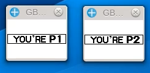 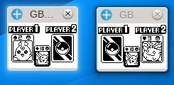
Zany Cards was the first Pokemon Mini title with working IR netplay support in GBE+.
While this achievement was exciting, it did not last long. Every other game I tried continued to fail no matter what amount I set GBE+ to halt and sync. As I found out later, getting Zany Cards to work at all was something of a fluke. Player 2 runs code that enters a very short loop that waits for the very first IR signal from Player 1, which lets both players execute a handshake at roughly the exact same time. If that handshake is properly timed, the rest of the IR protocol typically runs without issue. Thanks to the way Zany Cards was programmed, the handshake worked as intended on GBE+, as did the following protocol. The other games were programmed much differently. Rather than having Player 2 wait in a short loop for the handshake, these games ran lots of other code and relied on the IR interrupt to start receiving any signals.
This method of detecting the handshake was problematic for a few reasons. The most serious one was that of nested interrupts. While the CPU is servicing one interrupt, the game may decide it wants to allow other interrupts to happen while its still processing the current one. For example, if the game is in the middle of processing one of the button-based interrupts, it wouldn't be wise to ignore a more time sensitive interrupt such as the IR port receiving a signal. When I first implemented the Pokemon Mini's interrupts in GBE+, I forgot to let the CPU handle these cases of nested interrupts. Instead, each interrupt had to run all the way to the very end before another would begin. This caused the IR handshakes to wildly desync in something like Pokemon Shock Tetris.
Previously, I disabled all interrupts until the CPU called the RETI instruction, which returns from an interrupt and resumes right where the program left off. This isn't really how the hardware works. Instead, the CPU register SC contains a 2-bit flag in Bits 6 - 7 that dictates which interrupts are allowed based on their priority level. When jumping into an interrupt, all other interrupts except NMIs are disabled via this flag. When processing the original interrupt, the game can later decide to reset the flag in SC, thereby permitting new interrupts to occur. Software is supposed to handle nested interrupts, so all GBE+ had to do was set SC appropiately. This allowed the two IR handshakes to become much more closely aligned in GBE+. Whereas before they were off hundreds of CPU cycles, now they were only off by a few dozen.
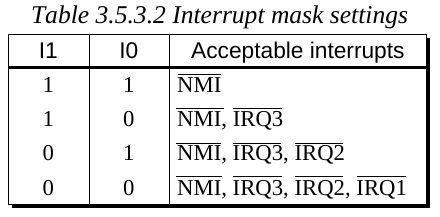
Properly masking/disabling interrupts based on Bits 6 and 7 of the SC register is essential to nested IRQs and IR emulation.
Close enough wasn't good enough though. I soon found another fault in GBE+ that prevented the handshakes from matching up all the way. The culprit was the synchronization method over a network; it simply was not thorough enough. GBE+ would check if one CPU had run for a given number of cycles, halt all operations while it pinged another instance, wait for confirmation that the other side had likewise run for that many cycles, and repeat all of these steps indefinitely.
Say the threshold for synchronization is 16 cycles, but Player 1 runs for 24 cycles in a single instruction. GBE+ would see that 24 cycles is greater than 16 and request synchronization with the other side. The problem here is that by the time Player 1 is asking to sync, it's already run 8 cycles beyond the scheduled 16 cycles. Player 1 is technically running a little bit ahead of Player 2 now, but this data was never sent to Player 2. Imagine if Player 2 always runs at exactly 16 cycles before syncing, but Player 1 keeps running over that limit by using instructions that take a long time to execute. Player 1 would then be running faster than Player 2 despite both instances of the emulator frequently pausing together.
One solution would have been to start syncing not after executing each instruction, but while the CPU is increasing its cycle count mid-instruction. That would have definitely worked, but it seemed like overkill, especially when it would have demanded a rewrite of large portions of the core's CPU code. The other solution is to simply have each instance tell the other how many cycles exactly it ran before syncing and balance out the difference between the two. If Player 1 runs for 32 cycles, it tells Player 2 to run for 32 cycles. If Player 2 happens to run for 40 cycles when syncing, it notes this difference of 8 cycles and tells Player 1 to run for that amount. If Player 1 runs for 12 cycles, it notes this difference of 4 cycles and tells Player 2 to run for that amount. This continues on and on, making sure neither side runs too far ahead of the other.
This really, almost, very nearly worked. The handshake was literally off by an average of 8 cycles at that point. Ultimately, I just artificially added those 8 cycles whenever either side sent an IR signal. If I had to guess, receiving an IR signal on a real Pokemon Mini is probably not instantaneous from the perspective of the software. It may take a few cycles for the IR transceiver to fully raise the IR interrupt. From what I disassembled of several Pokemon Mini ROMs, the sending code counts out a very specific number of cycles to run, so if two emulators are perfectly synced and still cannot recognize the handshake, this implies that some kind of delay is expected on the receiving side. Another possibility is that the timing on my emulated CPU isn't as accurate as it could be. That's a very distinct possibility, something that homebrew test ROMs will have to sort out at a later date.
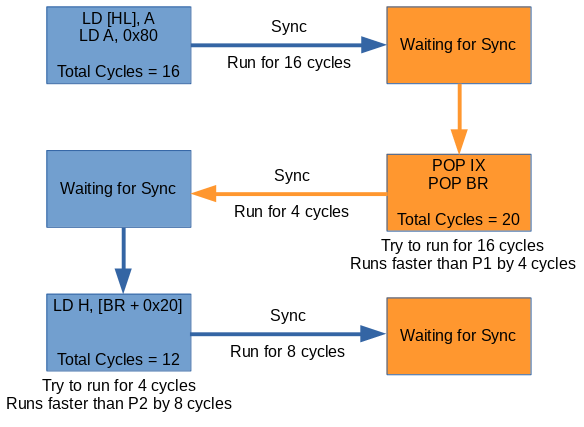
An overview of the new syncing method used in GBE+.
At any rate, that was the final piece of the puzzle. Once that tiny delay was added, nearly every IR feature I tried started working. One interesting thing to note is that games of different regions are compatible with each other. The European and Japanese versions of Pokemon Tetris can connect flawlessly for head-to-head gameplay. The US and Japanese versions of Zany Cards allows either version to play in matches. The underlying IR protocol is essentially the same no matter what, as far as I understand it.
With the Pokemon Mini, I decided to improve upon how GBE+ handles sync performance compared to the GBC core. Previously, once two instances of GBE+ connected, they were forced to run in lock-step, tightly syncing after only a few instructions running on either side. This caused a lot of slowdown, even when networking via localhost on the same computer. What used to be 60FPS dropped all the way down to 15 or 16 FPS until one side manually quit the connection. That's somewhat acceptable for 2 player interactions, but the Battlefield Mode in Pokemon Party Mini supports up to 6 players, and some modes in Zany Cards support up to 5. I needed a way to make the syncing work smoothly without dropping the FPS to abysmal levels for the duration of the gameplay.
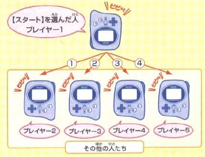
Constantly syncing 2 emulators could tank performance to a 1/3 or worse. How do we sync 5 or 6 of them?
Unlike multiplayer via Link Cable, IR communications aren't constant. They're short bursts at best. I decided that very strict syncing should only happen when the IR port on either side is active. By default, no syncing happens. However, once any player sends an IR signal, all sides starts syncing and simultaneously begin counting down CPU cycles. If about 500000 cycles (1/4 of a second of CPU cycles on the Pokemon Mini's S1C88) have passed with no additional IR activity, GBE+ will assume its safe to stop syncing and return to normal operations. In practice, this plays games very well. Only briefly will GBE+ drop to something like 17 or 24 FPS while IR transmissions are live; the rest of the time it plays at the full speed.
My initial implementation of IR netplay for the Pokemon Mini only supported 2-player modes. As I mentioned earlier, upwards of 6 Pokemon Mini's could potentially connect with one another. Thankfully, due to the line-of-sight nature of IR communication, even in these types of multiplayer modes only 2 handhelds will be transmitting data back and forth. The trick to successfully emulating this is to scale the way GBE+ talks to other instances of itself. Mostly, this involved setting up an array of sockets for networking and using an index to select which set to use. For example, an index of "0" would represent connections to Player 1, "1" would represent connections with Player 2, "2" would represent connections with Player 3, and so on.
With this, all GBE+ had to do was select the proper index and begin sending/receiving data. Different games might require players to transmit data in different orders, so I added the ability to cycle through each index via hotkey. For example, in the Zany Cards sub-game called Wild Match, Player 1 must first send data to every other player individually (Player 2, Player 3, Player 4, Player 5). During the actual gameplay, Player 1 makes a move, then sends data to Player 2. Player 2 makes a move, then sends data to Player 3, and on and on. When the last player is reached, they make a move and send data to Player 1, and the process repeats in a loop until the game is over. Setting up the game involves Player 1 broadcasting to each player one-by-one, while the match works like a diasy-chain. Since GBE+ can select the index, it can choose which player to communicate with at any given time. And with that, the Pokemon Mini's IR port is now fully functional through emulation.
A simple demonstration of 5-player IR netplay for the Pokemon Mini
Size ain't everything
Trying my hand at a new core for GBE+ was pretty fun. I'd be lying if I said I wasn't partially inspired by some of the folks over at the Emulation Development Discord Channel. You see people jump into making new emulators all the time, and it's not uncommon to find others handling 2, 3, 4, or more systems over the course of a year or so. While I've been through the DMG, GBC, GBA, and NDS myself, sometimes it's not good to grow too complacent or satisfied with your current understanding. I learned quite a lot about Nintendo's teeny, tiny, little handheld, and it was a pleasant journey that proved I can still add more to my knowledge. Hopefully someone will come along and verify, correct, or improve upon my thoughts on the Pokemon Mini's IR port. While we can now emulate it, we need to validate how the hardware really works. I look forward to the day when I can make GBE+ more accurate for netplay.
I've been tempted to dabble with something outside Nintendo's Game Boy and DS hardware for a while now, and the Pokemon Mini was the perfect opportunity. Make no mistake, I'm not content to restrict my research and endeavors to just a few game consoles, or even Nintendo products. There are plenty of unemulated accessories, add-ons, and hardware for many systems. In fact, the next project on the list isn't even related to anything GBE+ currently emulates. My personal motto hasn't changed in all these years: "Never give up. Never surrender. Emulate everything." Maybe I can't realistically emulate everything, but I'm sure going to try. For me, it's not just about enjoying an old game or two on a PC; it's about saving a piece of gaming history.
As far as Nintendo is concerned, the Pokemon Mini was a short sideshow they've all but forgotten about. It gets a brief nod in the one video from the Official Pokemon Youtube channel, but it's not even called out by name. I personally don't see it making a comeback, even in a limited sense like as an updated re-release on the Switch. They neglected to emulate the IR port once already when Pokemon Channel came out on the Gamecube, so it seems unlikely they'd go further next time. The Pokemon Mini is done; it came and went and had its time, so Nintendo moves on. Some of us, however, would like to dwell on the past, study it, play it, analyze it, celebrate it, critique it, and ultimately pass it on to future generations. It's up to us to make sure nothing gets left behind, no matter how small.
{kind=link}